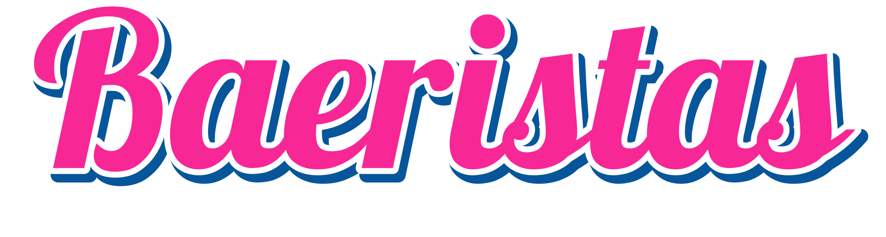

01
THE BOLD ONE
Espresso
Your everyday coffee crush.

Woman-owned. Portland, Oregon.
Espresso, smoothies & energy spritzers.
Your Portland bikini coffee stop, with extra personality.

A LITTLE FLIRT. A LITTLE CAFFEINE. A WHOLE MOOD.
The crush collection
Three ways to make it a Baeristas day.
Which one's your type?
THE BOLD ONE
Your everyday coffee crush.

THE SMOOTH TALKER
A little change of pace.

THE EXTRA ONE
Bring your big-day energy.
Concept illustrations. Current menu and ingredients available at the stand.
Pink is a personality.
Woman-owned. Unapologetically playful. Baeristas brings bikini coffee, vegan espresso, and a little chemistry to your Portland coffee run.
See you at the windowYour next little detour
Find your Baeristas.
We'll meet you at the window.
01 / NORTHWEST PORTLAND
Check current hours before visiting.
Take me there Get directions to St Helens, opens a new tab02 / NORTHEAST PORTLAND
Confirm location details before visiting.
Take me there Get directions to Sandy, opens a new tabPink cups. Blue skies. Your next coffee crush.
See you,
sweet thing.